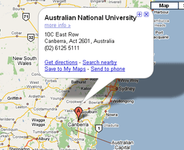
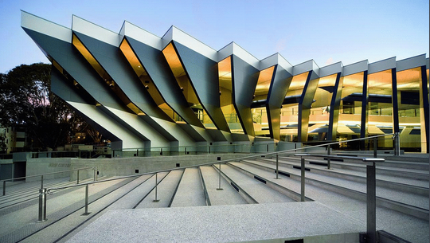

Australian National University Website http://www.anu.edu.au/ Location Canberra, the capital of Australia. City advantages. Canberra is the capital of Australia, located in an open valley in the Australian mountain region, situated in Australia...
Australian National University

Website http://www.anu.edu.au/
Location: Canberra, the capital of Australia

City advantages
Canberra is the capital of Australia, located in an open valley in the Australian mountain range, in the southeastern part of the country. It covers an area of 2,395 square kilometers, with a population of 368,000 and an elevation of 760 meters. It is the political center of the country. Banking, hotels, and public services are the main economic sectors. There are railways connecting major cities. Tourism is very popular. The climate is mild, with distinct seasons, average annual rainfall, and sunny days throughout the year. As the political center of Australia, Canberra is home to the Australian Parliament House, the High Court of Australia, and numerous other government departments and diplomatic offices. It is also home to many national social and cultural institutions, such as the Australian War Memorial, Australian National University, Australian Sports Association, National Gallery of Australia, National Museum of Australia, and National Library of Australia. The Australian military headquarters, as well as major military education institutions such as the Royal Military Academy Duntrun and the Australian Defence College, are also located in Canberra.
School Introduction

In the 2014-15 QS World University Rankings, the Australian National University ranked 25th, ranking first in Australia; in the 2014-15 Times Higher Education (THE) rankings, it was ranked 45th, second in Australia, seventh in the world, and the highest employment rate among Australian universities and 20th globally.

The teaching and research standards of Australian National University enjoy a very high reputation internationally. In the United Kingdom Times Higher Education QS World University Rankings, United States Newsweek ANU has been repeatedly ranked among the top two Australian universities, frequently ranked among the top 30 worldwide, firmly among the top 50 globally, and is one of the academic powerhouses in the Southern Hemisphere. The Australian National University has twice been rated as a first-tier university by the Australian Commission for the Quality of Higher Education and has also been recognized by the Asia Weekly It has repeatedly ranked first in the overall Australian university rankings.

Admission requirements
Undergraduate - Gaokao score 500, IELTS 6.5, TOEFL 80
Graduate - IELTS 6.5
Faculty of Economics and Business
Faculty of Engineering and Information Technology
Law school
Academy of Sciences
College of Art
Asian Studies Institute
School of Music and Visual Arts
Tuition fees
Foundation course: A$22,500-28,500
Undergraduate: A$28608-33168
Graduate Students: A$28,608-36,528
Graduate Students: A$28,608-36,528
Graduate Students: A$28,608-36,528
The Australian National University (ANU) ranks first in the country for Arts and Humanities, Natural Sciences, and Social Sciences; Engineering and Technology ranks third in Australia, and Medicine ranks fourth.

澳大利亚国立大学 Australian National University
位置 澳大利亚首都堪培拉
城市优势
堪培拉是澳大利亚的首都，位于澳大利亚山脉区的开阔谷地上，位于澳大利亚东南部。东经149°07′，南纬35°17′，面积2395平方公里，人口36.8万，海拔760米。全国政治中心。以银行、饭店和公共服务业为主要经济部门。有铁路连接各大城市。旅游业甚盛。气候温和，四季分明，全年降雨量平均，四季都有阳光普照的日子。 作为澳大利亚政治中心，堪培拉城内建有澳大利亚国会大厦、澳大利亚高等法院和众多其他政府部门与外交机关。它也是许多全国性社会和文化机构的所在地，例如澳大利亚战争纪念馆、澳大利亚国立大学、澳大利亚体育学会、澳大利亚国立美术馆、澳大利亚国立博物馆及澳大利亚国家图书馆。澳大利亚军队总部，以及主要军事教育机构邓特伦皇家军事学院和澳大利亚国防学院也设在堪培拉。
学校介绍
澳大利亚国立大学在2014-15年的QS世界大学排行榜中排名第25位，名列全澳第一，澳大利亚国立大学在2014-15年的泰晤士高等教育(THE)排名第45位，名列全澳第二，全球第七的国际大学，澳大利亚就业毕业生最高的大学，全球排第20。
澳大利亚国立大学的教学及研究水平在国际上享有极高的声望。在英国泰晤士高等教育、QS世界大学排名、美国新闻周刊、美国新闻与世界报道、澳大利亚联邦政府研究理事会等各式主流大学排行榜上，ANU多次被评为澳大利亚大学的前两名，多次名列全世界前30，稳居世界前50大，是南半球的学术重镇之一。澳大利亚国立大学曾两度被澳大利亚高等教育品质保证委员会评议为第一等级大学，也曾被《亚洲周刊》列为澳大利亚最顶级的多元教育大学，并多次位居澳大利亚大学综合排名第1名。
入学要求
本科-高考成绩500，雅思6.5，托福80
研究生-雅思6.5
经济和商业学院
工程和信息科技学院
法学院
科学院
艺术学院
亚洲研究学院
音乐和视觉艺术学院
学费
预科：A$22500-28500
本科：A$28608-33168
研究生：A$28608-36528
研究生：A$28608-36528
研究生：A$28608-36528
澳大利亚国家大学 (ANU) 在艺术与人文（Arts and Humanities）、自然科学（Natural Sciences）与社会科学（Social Sciences）都名列全澳第1；工程与科技学 （Engineering and Technology）排名全澳第3，医学（Medicine）则排名全澳第4。
English edition. Select 中文原文 to compare with the original Chinese article.
This article is edited and published by Liaoning Overseas Study Service Co., Ltd. The content is for study abroad planning reference only. Unauthorized reproduction is prohibited.
Information on policies, regulations, admissions brochures, and program fees is timely. Please refer to the latest releases from official institutions and institutions in various countries; For detailed verification, please Contact an advisor。